Inventory Reports This section includes samples and descriptions of Inventory-related reports available in MenuLink Client. Depending on your system set-up, you may not have access to all reports and selection options described. Contact your system administrator for more information. For general information on how to view and print reports, as well as selecting report options, see Viewing and Printing Reports. You can access Inventory reports from the Reports button on the Inventory Switchboard (Inventory reports only, as shown in the screen example below) or from the Reports button on the Main Switchboard (all Inventory reports). Note that the reports listed may differ from what appears on your list. Contact your system administrator for more information. 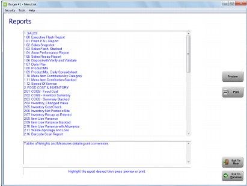 Chart of Accounts Report The Chart of Accounts report lists each Item category name, its MenuLink ID and GL account, if defined. 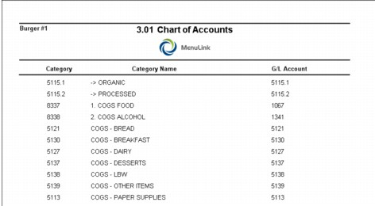 Food Cost- Inventory Summary Report The Food Cost- Inventory Summary report displays item-level information related to inventory usage and food costing, grouped by item category. For each item, it displays the beginning inventory, the purchases and ending inventory and calculates the actual usage. It also shows theoretical and actual usage for each item and category, expressed in units, dollars, and as a percentage of total sales. Negative values are shown in parentheses. Total food cost figures are shown at the bottom of the report. 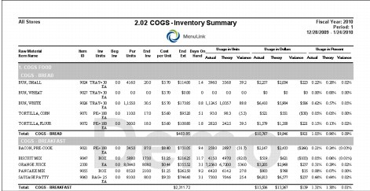 Food Cost Report The Food Cost report displays theoretical and actual usage for each item category, expressed in Dollar amounts, as well as percentage of total sales. Negative values are shown in parentheses. Total food cost figures are shown at the bottom of the report. 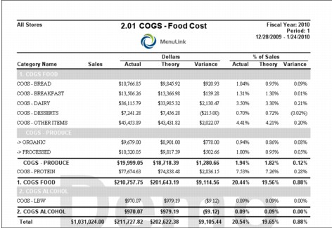 Food Cost Summary Stacked Report Like the Food Cost report, the Food Cost Summary Stacked report displays theoretical and actual usage of inventory except that multiple sites can be compared. Only the grand totals are displayed. 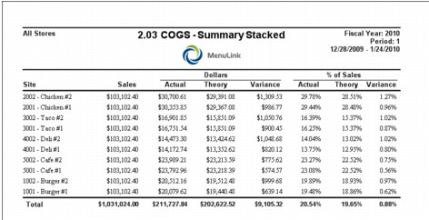 Inventory Cost Check Report The Inventory Cost Check report is a comparison of the current cost of inventory items to the previous inventory cost and the weighted average of the purchase cost. Items are sorted by highest percent change in descending order (highest to lowest). This report can be useful to track price changes of inventory. 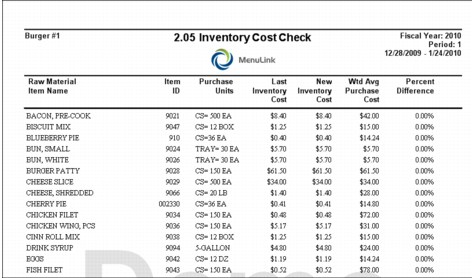 Inventory Extension Report The Inventory Extension report is a list of all raw materials on hand and their value, grouped by item category. 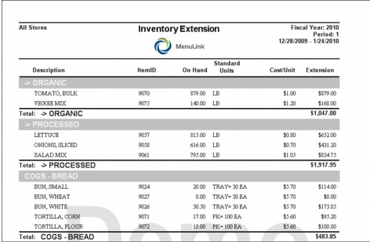 Inventory Recap as Entered Report The Inventory Recap as Entered report displays exactly how your inventory was entered into MenuLink by location by item by counting unit. Compare this to your inventory worksheet to help find inventory input errors. 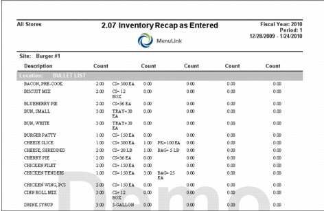 Item Use Variance Report The Item Use Variance report displays actual versus theoretical inventory for each item, grouped by category, in both quantity and dollar value. 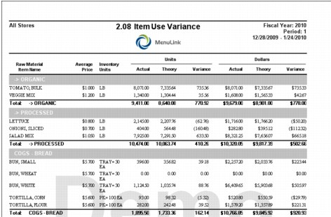 Item Use Variance Stacked Report The Item Use Variance Stacked report is similar to the Item Use Variance report, except that multiple sites can be selected and compared. 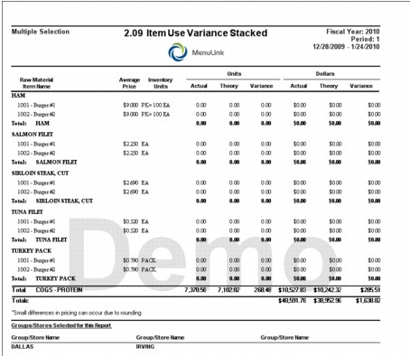 Spoilage and Loss Report The Spoilage and Loss report displays information on lost inventory, including item name, ID number, who entered the loss, the quantity, and dollar value. 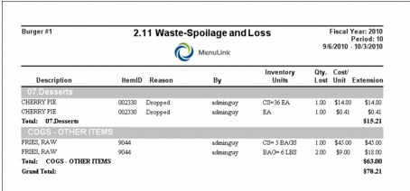 Stock Transfers Report The Stock Transfers report summarizes transfers to and/ or from your site. 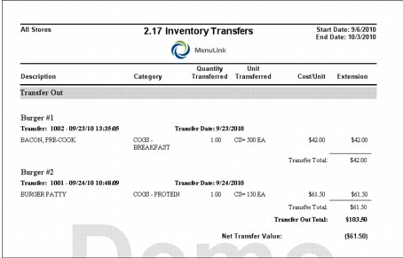 Theoretical Inventory Level Report The Theoretical Inventory Level report shows the theoretical (calculated) amount of each active raw material on hand, with price extension and grouped by category. 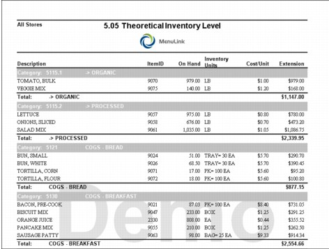 Top Twenty Item Usage report The Top Twenty Item Usage report shows the 20 most over-used and 10 most under-used raw materials, along with their associated costs. This report is great for quickly determining which items should be recounted for accuracy, or to help adjust par level for purchase orders. 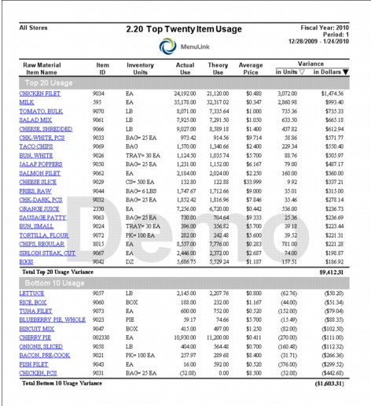 Top Twenty Item Usage (FIFO) Report The Top Twenty Item Usage (FIFO) report is very similar to the Top Twenty Item usage except that it uses FIFO calculations for theoretical cost. This report supports drilldown detail information by clicking on a Raw Material Item, underlined in blue, the Food Cost – Inventory Summary (FIFO) report will display more detail information.for the Raw Item. The variance columns are the only sortable columns on the report. 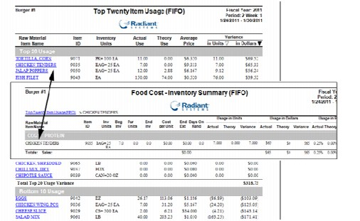 Trial Balance by Category The Trial Balance by Category report shows the beginning inventory and ending inventory for raw items, as well as other transactions that affect inventory such as purchases and transfers. The report also shows associated financial values (e.g., dollar amounts). 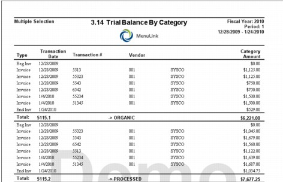